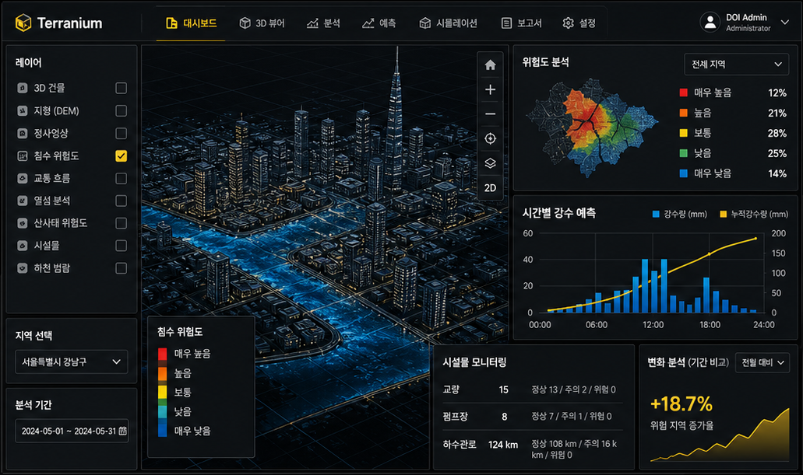
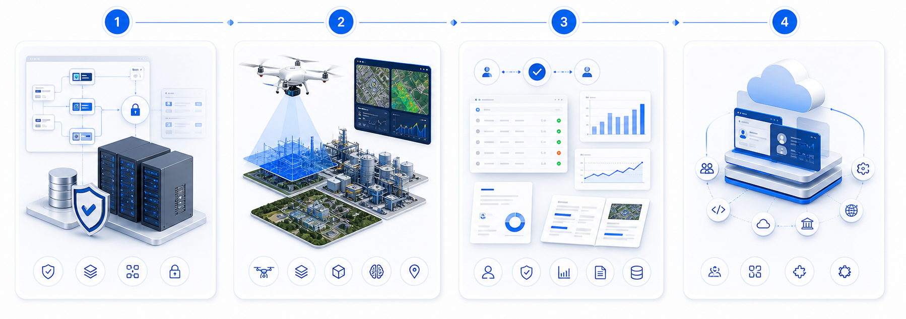

01
드론 매핑

정사영상, LiDAR, Point Cloud, DEM/DSM, 현장 사진을 프로젝트 단위로 통합 관리.
드론 측량 데이터, 2D/3D 디지털 트윈, GeoAI 분석,
검수 워크플로우, 보고서 자동화를 하나의 안전 점검 운영 흐름으로
연결합니다.

* 본 이미지는 AI가 생성한 예시 이미지입니다.
기존 GIS, 3D 뷰어, 드론 데이터 관리 도구의 단절을 넘어 데이터 등록, 시각화, 분석, 승인, 보고서를 연결하는 업무형 플랫폼입니다.
정사영상, LiDAR, Point Cloud, DEM/DSM, 현장 사진을 프로젝트 단위로 통합 관리.

MapLibre·Cesium 기반 Web GIS와 3D Tiles, Point Cloud, 레이어 피쳐 제공.

균열 또는 도로 손상 등 대표 모델 결과를 지도 레이어와 테이블로 제공.

신뢰도, 오탐/누락 관리와 검수 의견으로 승인된 결과 생성.

승인된 분석 결과, 지도 캡처, 레이어 속성을 보고서 초안으로 자동 생성.
정사영상부터 Point Cloud까지, 자체 운영하는 드론 항공측량으로 GeoAI 분석에 바로 투입되는 정밀 공간 데이터를 안정적으로 확보합니다.

드론 19대 + 센서 8종을 자체 보유·운영하는 국내 최대 수준의 측량 인프라.

수집된 공간 데이터를 외부 클라우드로 전송하지 않고, 자체 보유한 GPU 인프라에서 GeoAI 모델 학습과 추론을 처리합니다.

도로·교량·국토 정밀 측량부터 농지·시설 관리까지, 정부·공공기관과 함께 검증한 운영 실적이 Terranium의 신뢰 기반입니다.


아키텍처·보안·표준 정립, 단일 고객 파일럿 셋업.
드론 매핑·디지털트윈·GeoAI 검수 일관 운영 검증.
리뷰·승인·보고서 자동화 확장, 거버넌스 강화.
멀티테넌트 SaaS로 전환, 파트너 생태계 확장.
산업·공공 시설 안전점검부터 SaaS 전환까지 — DOI가 함께합니다.